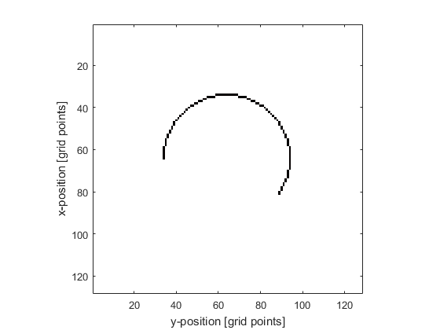

makeCircle
Create a binary map of a circle within a 2D grid.
Syntax
circle = makeCircle(Nx, Ny, cx, cy, radius)
circle = makeCircle(Nx, Ny, cx, cy, radius, arc_angle)
circle = makeCircle(Nx, Ny, cx, cy, radius, arc_angle, plot_circle)
Description
makeCircle creates a binary map of a circle or arc (using the midpoint circle algorithm) within a two-dimensional grid (the circle position is denoted by 1's in the matrix with 0's elsewhere). A single grid point is taken as the circle centre thus the total diameter will always be an odd number of grid points. The plot that is displayed after calling makeCircle(128, 128, 64, 64, 30, (215/180)*pi, true); is given below.

Inputs
Nx, Ny |
size of the 2D grid [grid points] |
cx, cy |
centre of the circle [grid points], if set to 0, the centre of the grid is used |
radius |
circle radius [grid points] |
Optional Inputs
arc_angle |
arc angle for incomplete circle [radians] (default = 2*pi) |
plot_circle |
Boolean controlling whether the circle is plotted using imagesc (default = false) |
Outputs
circle |
2D binary map of a circle |
Examples
See Also
makeCartCircle,
makeDisc